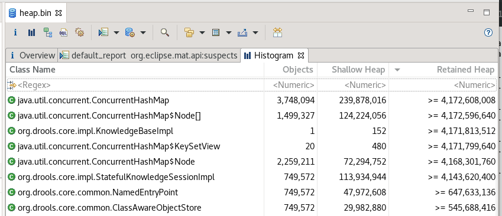
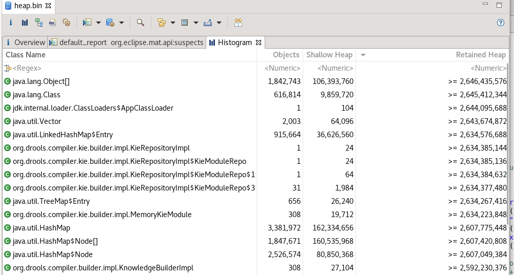
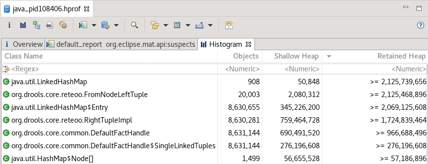

Drools trouble-shooting : Memory issues
Memory issues are another frequent topic in Drools trouble-shooting. This article will explain how to solve issues categorized in 3 types.
Long term memory leak while using Drools applications
The word "Memory leak" is typically used for the situation where a JVM triggers Full GCs but the footprint is constantly increasing. In this case, let’s capture a heap dump.
jmap -dump:format=b,file=heap.bin [JAVA_PID]Then analyze the heap dump with a tool. For example, Eclipse Memory Analyzer (MAT) : https://www.eclipse.org/mat/
Firstly, check which objects retain the large part of the heap. For example, the histogram screenshot below suggests that KnowledgeBaseImpl and StatefulKnowlegeSessionImpl retain the large part of the heap.

Secondly, check the number of the suspicious object. In this case, the number of StatefulKnowlegeSessionImpl objects is 749,572. Of course, it depends on your system. Your system might have a large number of concurrent active KieSessions at the same time so it may not be an issue. But if it’s unusually large, it’s likely caused by forgetting dispose. Please review your application codes and make sure to dispose of a KieSession in a finally block, so you will not miss it.
Here is a histogram screenshot from another scenario. This time, KieRepositoryImpl retains the large part of the heap.

This issue can be found when you build many KieContainers that may have different artifactIds or different versions. You may hit this issue in Business Central as well.
KieRepositoryImpl is a repository to store KieModules that are built resources. However, what KieRepositoryImpl retains are "cache", so you can control the cache size using the system properties below:
kie.repository.project.cache.size: Maximum number ofKieModulesthat are cached in theKieRepositoryImpl. Default value is100kie.repository.project.versions.cache.size: Maximum number of versions of the same artifact that are cached in theKieRepositoryImpl. Default value is10
You may even set them to 1.
OutOfMemoryError when building rules
If you hit an OutOfMemoryError when you build rule resources (e.g. ks.newKieBuilder(kfs).buildAll()), you would just need to increase the heap size (-Xmx). There may be room to review and reduce the number of your rules, but there is not much to do usually. The more rules you have, the more heap you would need.
OutOfMemoryError when executing a KieSession
You may hit a memory spike and result in an OutOfMemoryError while executing a KieSession. I recommend you to set the JVM option -XX:+HeapDumpOnOutOfMemoryError, so you can capture a heap dump automatically at that time. Here is an example screenshot of the histogram.

You see that FromNodeLeftTuple and RightTupleImpl retain the large part of the heap. These objects are used only during KieSession execution, so "short-lived" objects. Seeing these objects is a sign that too many evaluations are happening during KieSession execution. It can be solved by improving rules. Typically, it is caused by "cross-product". The rule caused the issue is this:
rule "Find Non unique SSN"
when
$inputList : List()
$p : Person() from $inputList
$nonUniqueSSNList : List(size > 1) from collect (Person(ssn == $p.ssn) from $inputList)
then
...Client code inserts a List that contains 10000 Person objects. The 3rd line of the when condition causes 10000 x 10000 object evaluations inside "from". It caused an OutOfMemoryError. It would also be very slow even if you had enough memory. The rule would be rewritten like this:
rule "Find Non unique SSN"
when
$p1: Person()
$p2: Person(this != $p1, ssn == $p1.ssn)
then
...Instead of inserting List itself, insert all Person objects. Then a rule can be very simple. It’s still a kind of "cross-product" so we may have a chance to improve it further depending on the fact model (e.g. $p2: Person(id > $p1.id, ssn == $p1.ssn)). Anyway, it’s much faster than the previous rule.
To investigate a bottle-neck of rules, this article https://blog.kie.org/2021/07/how-to-find-a-bottle-neck-in-your-rules-for-performance-analysis.html will also help.